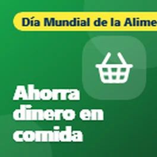
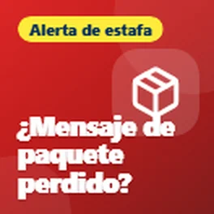
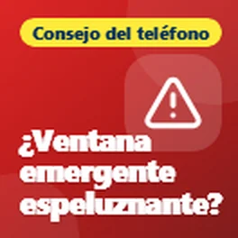

Esta página se ha traducido automáticamente. Si algo no suena bien, avísame.
Consejos tecnológicos gratuitos para Bridlington y el East Riding
Ayuda sencilla con teléfonos, ordenadores y cómo mantenerte seguro en línea. Gratis, sin necesidad de inscribirse.
Últimos consejos

Libros y televisión gratuitos que puedes escuchar
Hoy es el cuarto día de la Semana Nacional del Braille, y los consejos de hoy son sobre libros, radio y televisión que puedes disfrutar escuchando.
Herramientas gratuitas para reducir las facturas de banda ancha y teléfono
Hoy es el Día Internacional para la Erradicación de la Pobreza, así que quería compartir algunas herramientas gratuitas que pueden ayudarte a reducir el coste de tu banda ancha...

Dispraxia: tecnología para moverse
Hoy es el sexto día de la Semana de Concienciación sobre la Dispraxia, y hoy quería compartir algo de tecnología que ayuda a moverse.

Deja que tu teléfono te lea
Hoy es el tercer día de la Semana Nacional del Braille, y hoy quería compartir algunas formas gratuitas de hacer que tu teléfono o ordenador te lean cosas en voz alta.

Dispraxia: aplicaciones para moverse
Hoy es el quinto día de la Semana de Concienciación sobre la Dispraxia, y los consejos de hoy son todos sobre moverse.

Ahorra dinero en comida con tu teléfono
Hoy es el Día Mundial de la Alimentación, así que quería compartir algunas aplicaciones gratuitas que pueden ayudarte a ahorrar dinero en comida y a evitar que la buena comida se desperdicie.

Aplicaciones gratuitas que podrían ayudarte a ahorrar una vida
Hoy es el Día de Reiniciar un Corazón, así que quería compartir algunas aplicaciones y sitios web gratuitos que pueden ayudarte a aprender RCP y estar preparado para ayudar si alguien se le para el corazón.

Moverse con pérdida de visión
Es el segundo día de la Semana Nacional del Braille, y hoy también es el Día de Seguridad del Bastón Blanco, así que quería compartir algunas aplicaciones gratuitas que ayudan a las personas con pérdida de visión...

Dispraxia: herramientas que facilitan la lectura
Es el cuarto día de la Semana de Concienciación sobre la Dispraxia, y hoy quería compartir algunas herramientas gratuitas que facilitan la lectura.

¿Recibiste un mensaje sobre un paquete perdido?
Quería compartir una advertencia sobre los mensajes falsos de entrega de paquetes, ya que son una de las estafas más comunes en este momento.

Dispraxia: cuando la escritura es difícil
Es el tercer día de la Semana de Concienciación sobre la Dispraxia, y los consejos de hoy son para cualquiera que tenga dificultades con la escritura.

¿Te cuesta leer tu teléfono?
Esta semana es la Semana Nacional del Braille, así que quería compartir algunas funciones gratuitas en tu teléfono que pueden marcar una gran diferencia si tu vista no es como...

¡Tienes un teléfono o portátil viejo en un cajón?
Hoy es el Día Internacional de Residuos de Aparatos Eléctricos y Electrónicos, lo que es un buen recordatorio de todos esos teléfonos, tabletas y portátiles viejos que están en los cajones. La mayoría de nosotros tenemos...

Dispraxia: herramientas para mantenerte organizado
Es el segundo día de la Semana de Concienciación sobre la Dispraxia, y hoy quería compartir algunas herramientas gratuitas que ayudan a mantenerte organizado.

Tu teléfono podría ayudarte en una emergencia
Hoy es el Día Internacional de la Reducción del Riesgo de Desastres, así que quería compartir algunas funciones de tu teléfono que realmente podrían ayudar en una emergencia....

¿Manos doloridas? Deja que tu teléfono y portátil hagan el trabajo
Hoy es el Día Mundial de la Artritis, así que quería compartir algunas funciones de tu teléfono y portátil que pueden hacer la vida mucho más fácil si tienes dolor, rigidez o...

Tecnología que ayuda a los niños a aprender, no a depender de ella
Esta semana es la Semana de Concienciación sobre la Dispraxia, así que quería compartir algunas formas en que la tecnología puede ayudar a los niños con dispraxia. La idea es usar la tecnología para ayudarles...

Haz que tu teléfono trabaje para tu bienestar
El Día Mundial de la Salud Mental fue el 10 de octubre, así que quería compartir algunas cosas sencillas que tu teléfono ya puede hacer para ayudarte a sentirte un poco más tranquilo y más...
Lo que te guste, hay una comunidad para eso
Quería compartir algo que mucha gente no se da cuenta que existe.
¡¿Anuncios apareciendo de la nada?
Siguiendo mi publicación sobre los anuncios emergentes que dan miedo, aquí tienes qué hacer si los anuncios siguen apareciendo en tu teléfono Android incluso cuando no estás usando ninguna aplicación.

¿Un anuncio emergente de miedo en tu teléfono? Es solo un anuncio
Quería compartir un consejo sobre esos anuncios emergentes que a veces aparecen en los teléfonos.
¿Está desactualizada tu navegación por satélite?
Aquí tienes un consejo rápido para cualquiera que todavía use un navegador por satélite en el coche.
Preseleccionado para los Premios Time2Volunteer 2026
Quería compartir un poco de noticias. Recientemente fui preseleccionado en los Premios Time2Volunteer 2026 por el voluntariado que hago con un servicio de soporte técnico local...
Datos sencillos para mantener tu ordenador seguro
Quería compartir algunos consejos sobre cómo mantener tu ordenador seguro, porque mucha gente termina pagando por antivirus que en realidad no necesitan.
¿Qué es un código QR?
Solo quería compartir un consejo rápido sobre códigos QR.
Compruebe sus temporizadores de calefacción y agua caliente
Con el clima más frío que se acerca, ahora es un buen momento para comprobar sus temporizadores de calefacción y agua caliente.
Pruebe su calefacción antes del invierno
Con el invierno acercándose, ahora es un buen momento para probar su calefacción, especialmente si no se ha usado mucho este año.
Navegue por consejos por tema
- Estafas y seguridad (4)
- Salud y bienestar (13)
- Dinero (2)
- Conectarse en línea y mantenerse conectado (2)
- Noticias (1)
- Tecnología diaria (5)
Lo que la gente dice
Muchísimas gracias, señor
Sí, sin duda útil, gracias. Lo compartiré con quien crea que le pueden servir tus consejos 😃
Útil, gracias
Recibe nuevos consejos por correo
Un correo breve cuando publico un consejo nuevo. Gratis, y puedes darte de baja cuando quieras.
Recibirás un correo para confirmar. Los correos los envía follow.it y cada uno tiene un enlace para darte de baja.